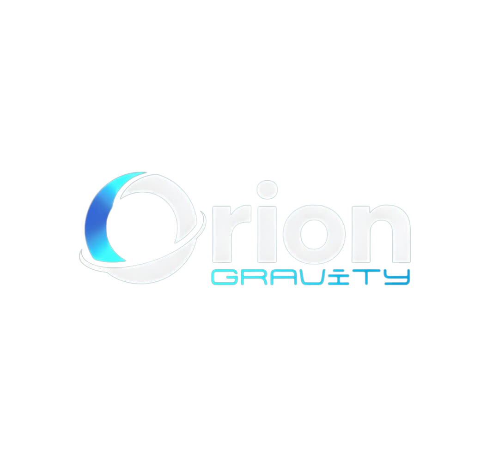

El presente proyecto de emprendimiento tiene como propósito fundamental el desarrollo e implementación de un ecosistema de transformación digital basado en Inteligencia Artificial y automatización de procesos para optimizar la eficiencia operativa y la capacidad estratégica de las entidades de trabajo en el sector comercial del Este de Barquisimeto, Estado Lara. La iniciativa surge ante la necesidad de modernizar las estructuras administrativas venezolanas, transformando la información dispersa en activos estratégicos para la toma de decisiones en tiempo real.
La metodología se enmarca en un enfoque cualitativo bajo el paradigma socio-crítico, empleando el método de Investigación Acción Participativa. Este proceso se desarrolló en cuatro fases: diagnóstico (mediante auditorías técnicas y el sistema de análisis masivo de datos), planificación estratégica basada en una escalera de valor, ejecución de soluciones tecnológicas y evaluación de impacto mediante indicadores de rentabilidad.
Los resultados del diagnóstico revelaron una brecha digital crítica en la región, caracterizada por la ausencia de presencia web funcional y una saturación de procesos manuales que generan "islas de datos" e ineficiencias operativas. Se determinó una estimación de que las organizaciones pierden un promedio de diez horas semanales en la generación de reportes manuales (Orion Gravity, 2026). No obstante, el análisis de factibilidad demostró la viabilidad técnica y financiera del proyecto, con una inversión inicial reducida, un punto de equilibrio alcanzable en el primer mes de operaciones y un retorno de inversión proyectado superior al 150%.
La reflexión final del proyecto destaca que la Inteligencia Artificial no es una herramienta de desplazamiento humano, sino un instrumento de soberanía tecnológica que dignifica el trabajo al desplazar la labor manual hacia roles de supervisión estratégica y creatividad. Orion Gravity se posiciona como un catalizador hacia la "Empresa Autónoma", donde la tecnología potencia la capacidad productiva nacional y transforma el caos informativo en sistemas de decisión eficientes y medibles.